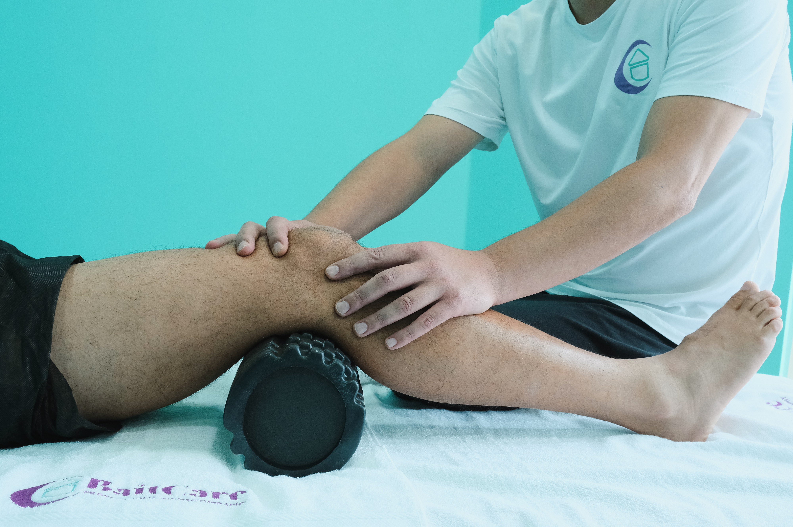
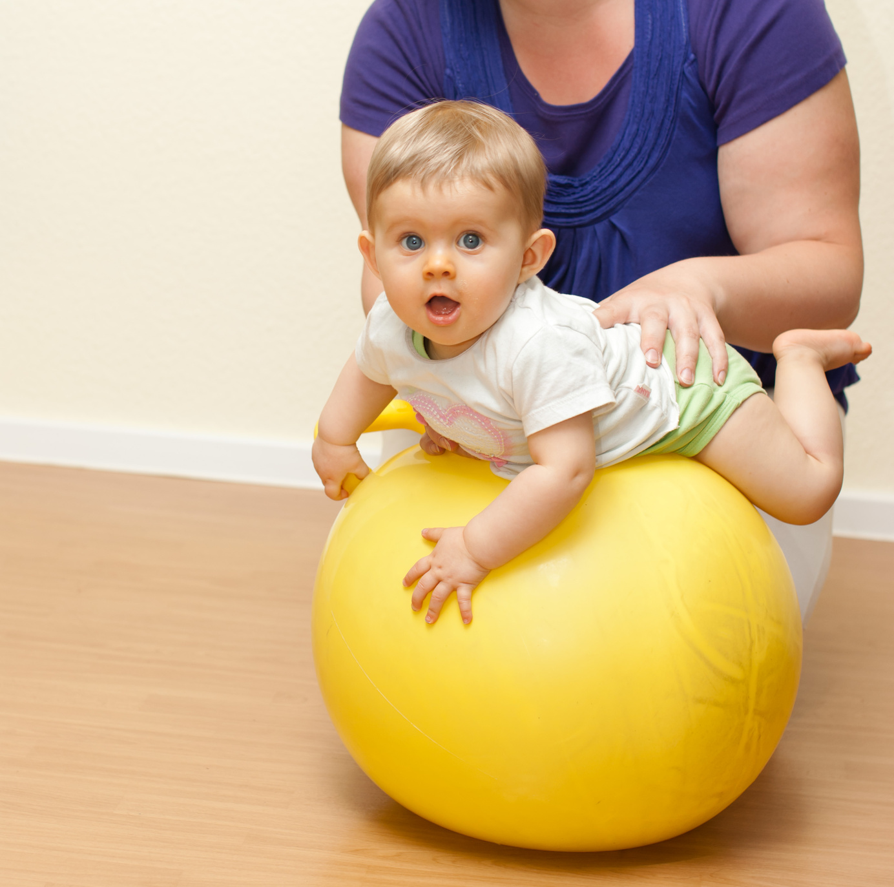
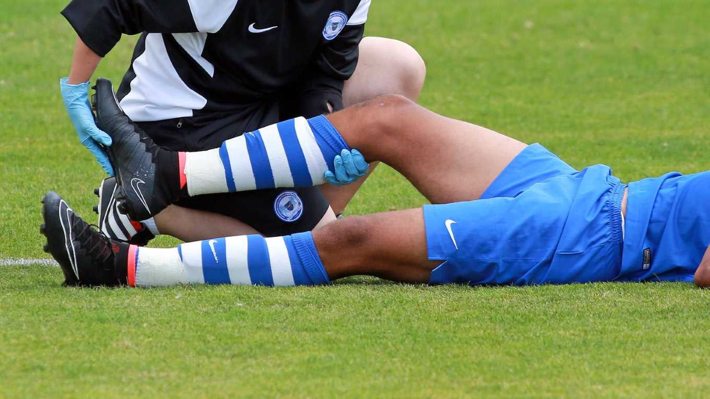
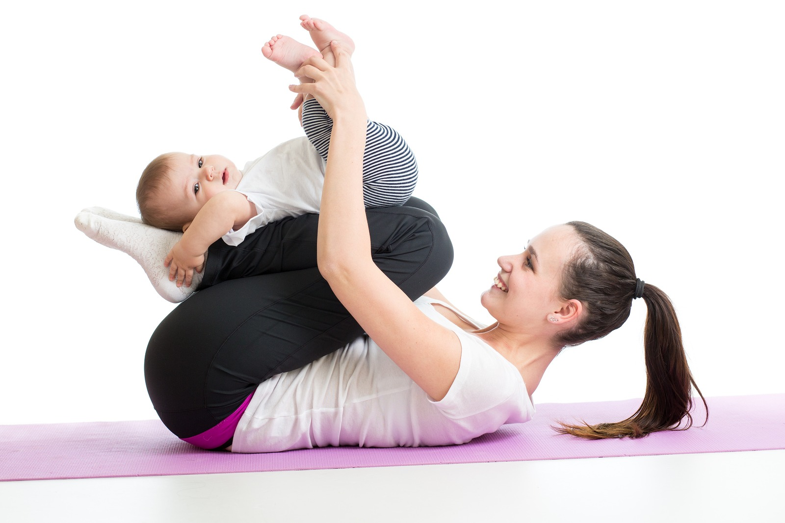
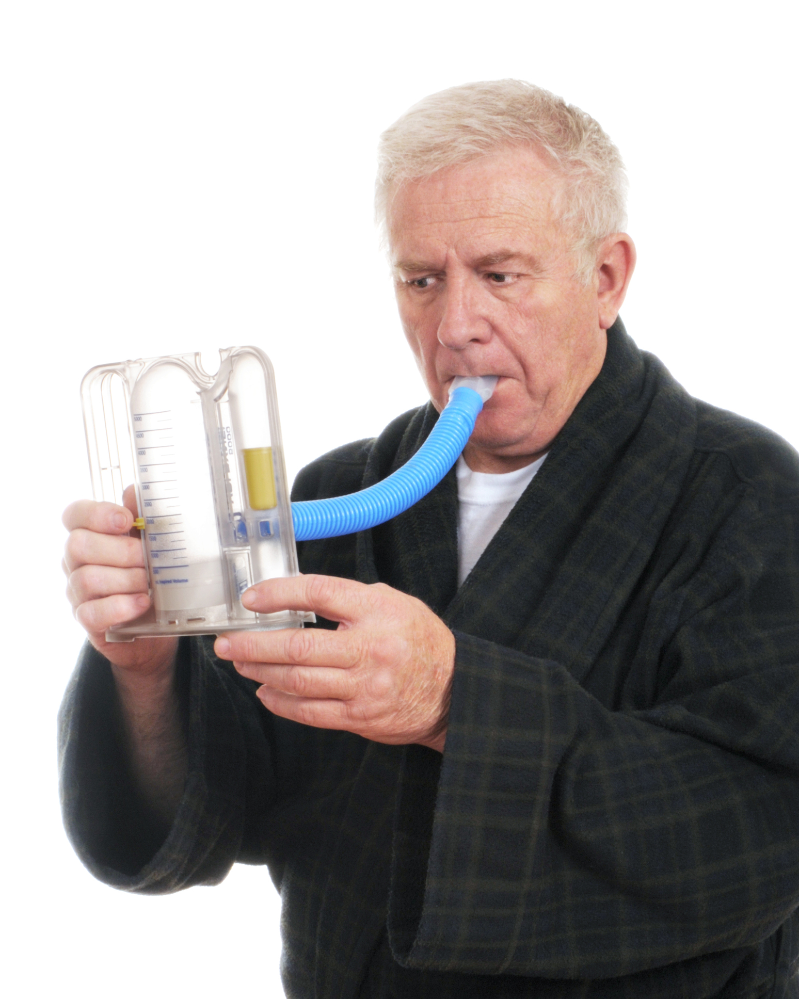

Everything You Need to Know About Different Types of Physiotherapy.
Physiotherapy (PT) is a healthcare profession, which encompasses various treatment modalities such as massages, heat therapy, exercises, electrotherapy, patient education, and advice for treating an injury, ailment, or deformity.
Types:
Musculoskeletal physiotherapy
Otherwise known as orthopaedic physiotherapy,
treatments that fall under this category focus on restoring function to the musculoskeletal system,
including muscles, joints, tendons, ligaments, nerves and bones,
that can be affected by various injuries, activities and movements.
Your physiotherapist will perform a detailed assessment of your musculoskeletal system to identify any
issues such as chronic pain, especially lower back pain that could be contributing to your symptoms.
Musculoskeletal treatments focus on:
- reducing pain
- increasing mobilisation
- treating soft tissue damage
- correcting skeletal alignment
Geriatric Physiotherapy
Geriatric physiotherapy focuses on the unique movement needs of older adults.
There are many conditions that affect people as they grow older such as arthritis,
cancer, osteoporosis, Alzheimer’s disease, joint replacements and balance disorders.
The goal of geriatric physiotherapy treatments is to help:
- restore mobility affected by old age
- reduce pain
- work around physical limitations and
- improve physical fitness and overall healtht
Actively ageing with the help of physiotherapy, is paramount in ensuring your future is pain free and as independent as possible.
Paediatric Physiotherapy
Paediatric physiotherapy focuses on the physical needs of infants, toddlers,
children and adolescents with a variety of developmental, neuromuscular, skeletal or other physical disorders.
Early detection is key when children experience problems that inhibit movement and their natural state of being.
Physiotherapy is used for children who are affected by diseases or injuries including:

- acute injuries from sport or otherwise
- genetic disorders like cerebral palsy
- birth defects
- developmental delays
- head trauma, muscle diseases and/or limb deficiencies
- orthopaedic disabilities
Physiotherapy treatments help children with:
- alleviating pain
- improving their gross and fine motor skills
- regaining strength, endurance and range of motion
- regaining balance, coordination and normalisation of movement
- therapeutic exercises and stretches for injury rehabilitation
- cognitive and sensory processing
Sports Physiotherapy
Our sports physiotherapists are closely involved in the care and wellbeing of athletes,
from weekend warriors to seasoned professionals and active children alike.
This area of practice includes management of athletic injuries through:
- initial assessment and diagnosis of an injury
- treatment of injury through the application of specialist advice and techniques to encourage healing
- rehabilitation and progressive injury management for a quick return to sport
- prevention practices such as movement assessments to identify and address any known precursors to injury
- education and sharing specialist knowledge (such as taping techniques) to individual athletes, teams or clubs to assist in the prevention of injury
Women’s Health
Physiotherapy for women mainly addresses issues to the female reproductive system,
childbirth, prenatal and postnatal care and issues with infertility.

Our specialist physiotherapists assist women with:
- relieving lower back, pelvic and hip pain during and after pregnancy
- strengthening core
- activating pelvic floor
- reducing lymphatic swelling
- controlling urinary incontinence
Rehabilitation and Pain Management
If you’re suffering from chronic pain, are due for surgery or if you’ve recently had surgery,
this type of physiotherapy focuses on getting you back on track to a pain free lifestyle.
Treatment prior to surgery focuses on exercises that will strengthen your body
and prepare you for post-operative rehabilitation. After surgery or injury,
reducing pain and swelling is the first priority and then gentle exercises to improve
function with the aim of getting you back on track as soon as possible.
Cardiorespiratory Physiotherapy
Cardiorespiratory physiotherapy specialises in the prevention, rehabilitation and
compensation of people suffering from diseases or injuries affecting the heart, chest and lungs.
Treatments include:
- deep breathing and circulation exercises
- correct breathing techniques
- strategies to help you manage coughs and shortness of breath
- positioning for optimal lung expansion
- pulmonary and cardiac rehabilitation
People who suffer (or have suffered from) from asthma, chronic bronchitis, pneumonia, emphysema, heart attack, hypertension or other conditions affecting the heart and lungs will benefit from this type of physiotherapy. If you’ve had heart or lung surgery, physiotherapy will also be able to assist you in your rehabilitation.
Neurological Physiotherapy
Neurological physiotherapy targets disorders affecting the brain and nervous system,
including head injuries, stroke, spinal cord damage, aneurysm, multiple sclerosis, Parkinson’s disease and
Cerebral Palsy for example.
It also helps to treat neurological balance issues that can arise due to conditions such as vertigo.
Treatments focus on improving motor control, balance and coordination. We have several physiotherapists who
treat vertigo (BPPV) and neurological conditions,
and these treatments can be done either in the clinic or during a home visit.